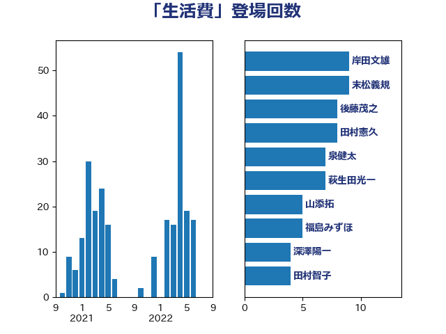

単語「生活費」

| 岸田文雄 | 自由民主党 | 9 回 |
| 末松義規 | 立憲民主党 | 9 回 |
| 後藤茂之 | 自由民主党 | 8 回 |
| 田村憲久 | 自由民主党 | 8 回 |
| 泉健太 | 立憲民主党 | 7 回 |
| 萩生田光一 | 自由民主党 | 7 回 |
| 山添拓 | 日本共産党 | 5 回 |
| 福島みずほ | 社会民主党 | 5 回 |
| 深澤陽一 | 自由民主党 | 4 回 |
| 田村智子 | 日本共産党 | 4 回 |
| 伊佐進一 | 公明党 | 3 回 |
| 伊藤孝江 | 公明党 | 3 回 |
| 前川清成 | 日本維新の会 | 3 回 |
| 古川禎久 | 自由民主党 | 3 回 |
| 末松信介 | 自由民主党 | 3 回 |
| 柳ヶ瀬裕文 | 日本維新の会 | 3 回 |
| 舩後靖彦 | れいわ新選組 | 3 回 |
| 串田誠一 | 日本維新の会 | 2 回 |
| 丹羽秀樹 | 自由民主党 | 2 回 |
| 國重徹 | 公明党 | 2 回 |
| 大口善徳 | 公明党 | 2 回 |
| 大西健介 | 立憲民主党 | 2 回 |
| 宮本徹 | 日本共産党 | 2 回 |
| 山口那津男 | 公明党 | 2 回 |
| 岩渕友 | 日本共産党 | 2 回 |
| 打越さく良 | 立憲民主党 | 2 回 |
| 杉尾秀哉 | 立憲民主党 | 2 回 |
| 熊谷裕人 | 立憲民主党 | 2 回 |
| 田村貴昭 | 日本共産党 | 2 回 |
| 白石洋一 | 立憲民主党 | 2 回 |
| 芳賀道也 | 国民民主党 | 2 回 |
| 野田聖子 | 自由民主党 | 2 回 |
| 麻生太郎 | 自由民主党 | 2 回 |
| たがや亮 | れいわ新選組 | 1 回 |
| ながえ孝子 | 無所属 | 1 回 |
| 三浦信祐 | 公明党 | 1 回 |
| 上野通子 | 自由民主党 | 1 回 |
| 伊波洋一 | 無所属 | 1 回 |
| 佐藤英道 | 公明党 | 1 回 |
| 倉林明子 | 日本共産党 | 1 回 |
| 古屋範子 | 公明党 | 1 回 |
| 古賀友一郎 | 自由民主党 | 1 回 |
| 吉良よし子 | 日本共産党 | 1 回 |
| 国光あやの | 自由民主党 | 1 回 |
| 城井崇 | 立憲民主党 | 1 回 |
| 塩村あやか | 立憲民主党 | 1 回 |
| 安江伸夫 | 公明党 | 1 回 |
| 小熊慎司 | 立憲民主党 | 1 回 |
| 山本博司 | 公明党 | 1 回 |
| 川崎ひでと | 自由民主党 | 1 回 |
| 平林晃 | 公明党 | 1 回 |
| 斎藤嘉隆 | 立憲民主党 | 1 回 |
| 斎藤洋明 | 自由民主党 | 1 回 |
| 松野博一 | 自由民主党 | 1 回 |
| 林芳正 | 自由民主党 | 1 回 |
| 柴田巧 | 日本維新の会 | 1 回 |
| 梅村聡 | 日本維新の会 | 1 回 |
| 水岡俊一 | 立憲民主党 | 1 回 |
| 沢田良 | 日本維新の会 | 1 回 |
| 玉木雄一郎 | 国民民主党 | 1 回 |
| 石垣のりこ | 立憲民主党 | 1 回 |
| 石川博崇 | 公明党 | 1 回 |
| 磯崎仁彦 | 自由民主党 | 1 回 |
| 稲富修二 | 立憲民主党 | 1 回 |
| 竹内譲 | 公明党 | 1 回 |
| 舞立昇治 | 自由民主党 | 1 回 |
| 菅義偉 | 自由民主党 | 1 回 |
| 足立康史 | 日本維新の会 | 1 回 |
| 輿水恵一 | 公明党 | 1 回 |
| 野間健 | 立憲民主党 | 1 回 |
| 阿部司 | 日本維新の会 | 1 回 |
| 須藤元気 | 無所属 | 1 回 |
| 高橋光男 | 公明党 | 1 回 |